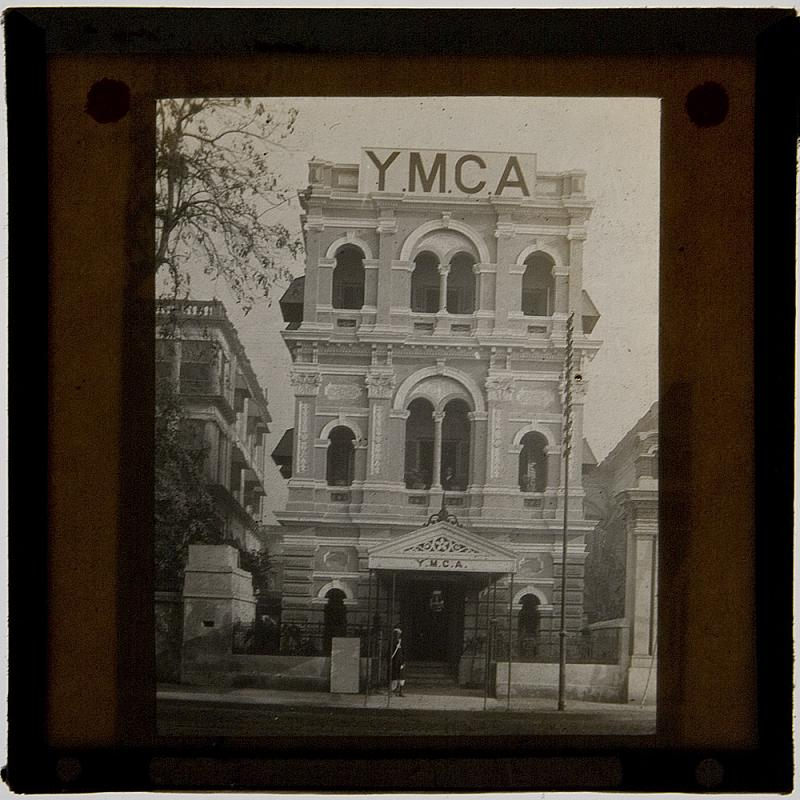
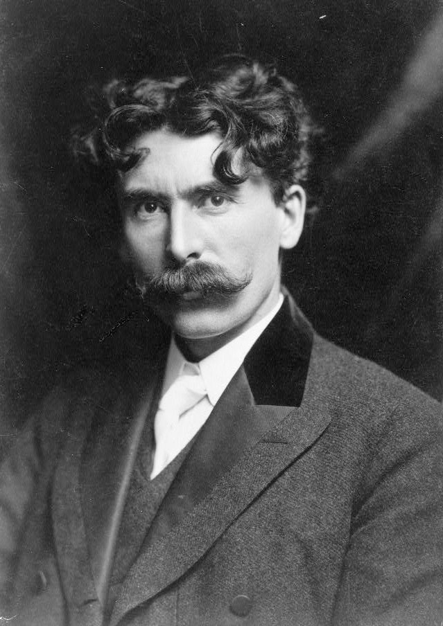
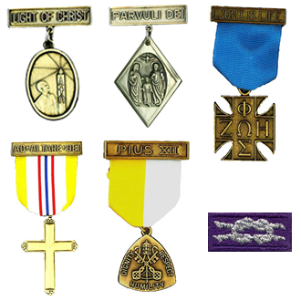
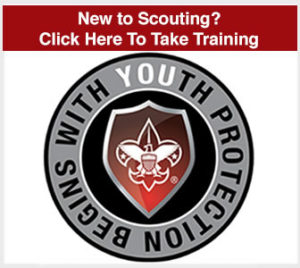
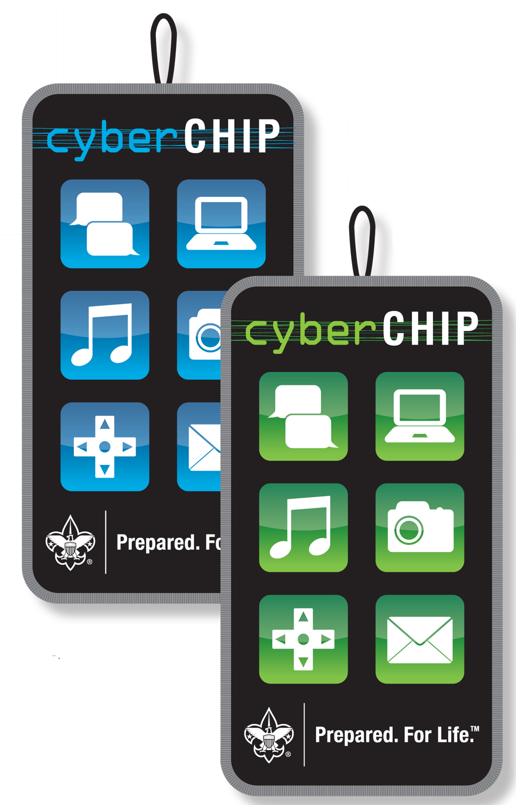
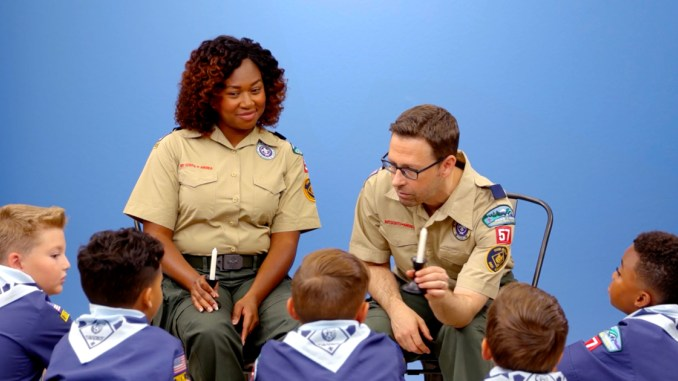

<!DOCTYPE html>
<html lang="en">
  <head>
    <meta charset="utf-8" />
    <meta name="viewport" content="width=device-width, initial-scale=1.0, maximum-scale=1.0, user-scalable=no" />

    <title>Welcome to Scouts BSA</title>
    <link rel="shortcut icon" href="./favicon.ico" />
    <link rel="stylesheet" href="./dist/reset.css" />
    <link rel="stylesheet" href="./dist/reveal.css" />
    <link rel="stylesheet" href="./dist/theme/white.css" id="theme" />
    <link rel="stylesheet" href="./css/highlight/zenburn.css" />

    <link rel="stylesheet" href="./assets/plugins/verticator.css" />
    <link rel="stylesheet" href="./assets/plugins/style.css" />

  </head>
  <body>
    <div class="reveal">
      <div class="slides"><section ><section data-markdown><script type="text/template">

<!-- .slide: data-background="bsa-logo.svg" -->

<div style="background-color: #ffffffAA">

# Welcome to Scouts BSA

**And welcome to our troop!**

</div>
</script></section><section data-markdown><script type="text/template">
## About This Presentation

Digesting this much information will be difficult.

When you have a question, ***please*** stop me at any time and ask it.

Feel free to ask questions of any leader after this presentation too.

<aside class="notes"><p>If you have a question, there&#39;s a good chance that someone else has it too.</p>
</aside></script></section><section data-markdown><script type="text/template">
## TLA's<br><span style="font-size:0.7em">(Three Letter Acronyms)</span>

<table style="font-size: 0.7em"><tr><td>
BSA – Boy Scouts of America<br>
SE – Scout executive<br>
DE – district executive<br>
COR – chartered organization representative<br>
SM – Scoutmaster<br>
ASM – assistant Scoutmaster<br>
</td><td>
PLC – patrol leaders’ council<br>
SPL – senior patrol leader<br>
ASPL – assistant senior patrol leader<br>
PL – patrol leader<br>
APL – assistant patrol leader<br>
</td><td>
</td></tr></table>

<aside class="notes"><p>We use a bunch. This presentation does not. Here&#39;s a sampling of more common ones. Don&#39;t worry about memorizing them; if I use one and you don&#39;t know it, simply ask.</p>
<p>Scout and Scoutmaster are capitalized on purpose - they are trademarked by the BSA.</p>
</aside></script></section></section><section ><section data-markdown><script type="text/template">
## What Is Scouting?

<table><tr><td>

</td><td>

</td></tr></table>

<aside class="notes"><p>Started in London. Robert Baden-Powell published a series of booklets that established games and practices to make youth more fit for adventure and leadership. He thought of this program for years after trying to handle improperly trained recruits in the military.</p>
</aside></script></section><section data-markdown><script type="text/template">
## Coming to the United States

<table><tr><td width="20%">

</td><td>+</td><td width="20%">

</td><td>+</td><td width="20%">

</td><td>=</td><td width="20%">

</td></tr></table>

<aside class="notes"><p>Turn of century had YMCA had camps, the Tribe of Woodland Indians boys&#39; organization from Ernest Thompson Seton, and the Sons of Daniel Boone from Daniel Carter Beard. They were brought together by William Boyce, who was inspired by an unknown Scout in London. Boyce combined these into the BSA.</p>
</aside></script></section><section data-markdown><script type="text/template">
## Organization

National Council, BSA
<!-- .element: style="background-color: lightblue; border: .04em solid navy; font-size: 0.8em; width: 60%; margin: 0.5em auto" -->

Region
<!-- .element: style="background-color: lightblue; border: .04em solid navy; font-size: 0.8em; width: 60%; margin: 0.5em auto" -->

Area
<!-- .element: style="background-color: lightblue; border: .04em solid navy; font-size: 0.8em; width: 60%; margin: 0.5em auto" -->

Council
<!-- .element: style="background-color: lightblue; border: .04em solid navy; font-size: 0.8em; width: 60%; margin: 0.5em auto" -->

District
<!-- .element: style="background-color: lightblue; border: .04em solid navy; font-size: 0.8em; width: 60%; margin: 0.5em auto" -->

Chartered Organization
<!-- .element: style="background-color: lightblue; border: .04em solid navy; font-size: 0.8em; width: 60%; margin: 0.5em auto" -->

Unit Committee
<!-- .element: style="background-color: lightblue; border: .04em solid navy; font-size: 0.8em; width: 60%; margin: 0.5em auto" -->

Unit (Pack, Troop, Crew, etc.)
<!-- .element: style="background-color: lightblue; border: .04em solid navy; font-size: 0.8em; width: 60%; margin: 0.5em auto" -->

<aside class="notes"><p>Chartered organization owns everything that the troop owns.</p>
</aside></script></section><section data-markdown><script type="text/template">
## Aims

* Character development
* Leadership development
* Citizenship training
* Personal fitness (physical, mental, emotional)
</script></section><section data-markdown><script type="text/template">
## Methods

* Ideals (Oath, Law, Motto, Slogan)
* Patrols
* Outdoor programs
* Advancement
* Association with Adults
* Personal Growth
* Leadership Development
* Uniform

<aside class="notes"><p>75% of Scouting is outing. // Surmountable obstacles in a safe environment. // Adults are positive role models.</p>
<p>Doing a Good Turn helps others, but also improves yourself by building good character.</p>
<p>Uniform creates a positive image in the community and shows commitment to the program.</p>
</aside></script></section><section data-markdown><script type="text/template">
## Uniforms

<table><tr><td width="45%">


</td><td>


</td></tr></table>

<aside class="notes"><p>No official requirement. Troop expectations.</p>
<p>Field Uniform / Class A - Shirt and all patches, belt, pants, socks. Merit badge sash only for formal events. Activity Uniform / Class B - dark blue shirt or hoodie, used when we&#39;re working or while at camp.</p>
</aside></script></section></section><section ><section data-markdown><script type="text/template">
## Transitioning from Cub Scouts


<!-- .element: style="max-width: 40%; margin: 0 auto" -->
</script></section><section data-markdown><script type="text/template">
<table style="font-size: 0.8em"><tr><th>

Cub Scouts

</th><th>

Scouts BSA

</th></tr><tr><td>

Family program

</td><td>

Training Scouts to be independent

</td></tr><tr><td>

Parents sign off on requirements

</td><td>

Scout leaders and Scouts sign off on requirements

</td></tr><tr><td>

Parents lead meetings and work with their own children

</td><td>

Scouts do things by themselves, parents step back

</td></tr></table>

<aside class="notes"><p>Each troop is unique, similar to how each family is different. We&#39;re covering how our troop wishes to implement the BSA&#39;s program.</p>
</aside></script></section><section data-markdown><script type="text/template">
## Getting Started

* Finish paperwork, pay dues
* Medical forms (Sections A, B, C)
* Scout uniform, patches, and numbers
* Scout handbook
* Get involved with the leadership
* Watch your child grow! *(It's hard!)*
</script></section><section data-markdown><script type="text/template">
<!-- .slide: data-background="step-back.jpg" -->
</script></section><section data-markdown><script type="text/template">
## Seeking Assistance

Scout asks the Patrol Leader

Patrol Leader asks the Senior Patrol Leader

Senior Patrol Leader asks the Scoutmaster or an Assistant Scoutmaster
</script></section><section data-markdown><script type="text/template">
## It's Time to Let Go

You want to help out, pass a message, or assist somehow. Talk to the Scoutmaster or an Assistant Scoutmaster. They will relay the information.

It's hard to watch kids struggling, but they are safe and will learn much more doing it themselves.

<aside class="notes"><p>Send messages through the Scoutmaster or Assistant Scoutmaster or let the youth figure it out themselves. The Scouts are in great hands.</p>
<p>If it&#39;s sensitive, the Scoutmaster or the Assistant Scoutmaster will go to the child directly.</p>
</aside></script></section><section data-markdown><script type="text/template">
<!-- .slide: data-background="character-training.jpg" -->
</script></section><section data-markdown><script type="text/template">
## When Should I Step In?

If it is a safety issue, step in immediately. This includes any form of bullying, hazing, profanity, or the threat of physical harm.
<!-- .element: style="color: red" -->

Otherwise, let them learn.

<aside class="notes"><p>It&#39;s hard, but your children will learn, advance, and become more independent faster. They will gain the most benefit from the Scouting program.</p>
</aside></script></section><section data-markdown><script type="text/template">
Here's how to get better.
<!-- .element: style="color: blue" -->


<table><tr><td width="50%">

Let me help you learn how.
<!-- .element: style="color: green" -->

</td><td>

What do you think? Is there a better way?
<!-- .element: style="color: teal" -->

</td></tr></table>

<aside class="notes"><p>On campouts and during troop activities, you&#39;re now a mentor. Ask exploratory and probing questions to make them think.</p>
</aside></script></section><section data-markdown><script type="text/template">
<!-- .slide: data-background="camp-chair.jpg" -->

<div style="background-color: #ffffffAA">

## Camp Chair

Your new best friend.

<aside class="notes"><p>Scouts set up tents, dining fly, patrol box. Cook meals, clean up. Tend the fire and managing their time.</p>
<p>What do parents do? Great question. Mostly sit around and talk. Parents are observers. Leaders are mostly observers too.</p>
</div></aside></script></section></section><section ><section data-markdown><script type="text/template">
## About the Program
</script></section><section data-markdown><script type="text/template">
## Ranks


</script></section><section data-markdown><script type="text/template">
## Advancement Goals

* Learning by doing
* Each child progresses at their own rate
* Encourage Scouting ideals
* Parents motivate, monitor, and support (not carry) the Scout
</script></section><section data-markdown><script type="text/template">
## Advancement Process

*The EDGE Method*
<!-- .element: style="background-color: lightblue; border: .04em solid navy; width: 60%; margin: 0.5em auto" -->

*Explain* the skill to be learned.

*Demonstrate* the skill.

*Guide* the Scout while they perform.

*Enable* the Scout by letting them teach others.
</script></section><section data-markdown><script type="text/template">
## Completing Requirements

Must be met <ins>exactly as written</ins>

Signed off by a senior Scout or an adult leader

No double-dipping

<aside class="notes"><p>Can&#39;t have anything count for two requirements of the same type.</p>
<p>Eg. A short hike for merit badge and rank, but not two merit badges nor two ranks. A long hike can be broken up and each chunk can count for different things.</p>
</aside></script></section><section data-markdown><script type="text/template">
## Rank Advancement

Skills or objectives change with each rank.

Three things are always included:

* Scout Spirit
* Scoutmaster Conference
* Board of Review
</script></section><section data-markdown><script type="text/template">
## Troop Structure

Youth-led troop and youth leadership positions

Patrols are ideally 6-8 youth

Adults facilitate

<aside class="notes"><p>The troop is a small democracy controlled by the youth in elected positions.</p>
<p>Patrols choose a name, a yell, and makes a flag. They camp, cook, clean, and go on activities together.</p>
</aside></script></section><section data-markdown><script type="text/template">
<!-- .slide: data-background="troop-structure.png" data-background-size="contain"-->
</script></section><section data-markdown><script type="text/template">
<!-- .slide: data-background="pop-quiz.jpg" -->

What position has the most power?
<!-- .element: style="color: white; margin-top: 33%" -->
</script></section><section data-markdown><script type="text/template">
<!-- .slide: data-background="pop-quiz.jpg" -->

<table style="background-color: white" width="60%"><tr><td align=center>


</td></tr></table>

<aside class="notes"><p>The patrol leader!</p>
<p>Adults facilitate.
SPL listens to patrol leaders.
Patrol leaders instructs and guides the patrol.</p>
</aside></script></section><section data-markdown><script type="text/template">
<!-- .slide: data-background="patrol-leader.gif" data-background-size="contain" -->

<aside class="notes"><p>It&#39;s also a position with a lot of responsibility. Coordinating meetings, communicating with members of the patrol, ensuring people are prepared and activities are done.</p>
</aside></script></section></section><section ><section data-markdown><script type="text/template">
<!-- .slide: data-background="patches.jpg" -->

## Awards
<!-- .element: style="background-color: #ffffffaa" -->
</script></section><section data-markdown><script type="text/template">
<!-- .slide: data-background="merit-badge-poster.jpg" data-background-size="contain" -->

<aside class="notes"><p>Over 130 skills, sports, hobbies, and careers.</p>
<p>Some are required for advancement after First Class.</p>
<p>Available during camp, troop meetings, weekend outings, on their own, and during special events - Scoutmaster Bucky, Toro, University of Minnesota</p>
</aside></script></section><section data-markdown><script type="text/template">
<table><tr><td>

</td><td>

</td></tr></table>

<aside class="notes"><ul>
<li>Obtain a blue card with a conversation</li>
<li>Contact a counselor - we can provide them</li>
<li>Meet requirements exactly as written</li>
<li>Obtain counselor&#39;s signature</li>
<li>Turn in blue card</li>
</ul>
</aside></script></section><section data-markdown><script type="text/template">
## Other Awards

<table><tr><td width="33%">

</td><td width="33%">

</td><td width="33%">

</td></tr></table>

*and many, many more*

<aside class="notes"><p>Nova, Supernova, Religious Emblems</p>
</aside></script></section><section data-markdown><script type="text/template">
<div style="columns: 3; font-size: 0.4em">

50-Miler<br>
Asian American Spirit of Scouting Service<br>
Alumni<br>
Boardsailing BSA<br>
BSA Council Alumnus of the Year<br>
BSA Lifeguard<br>
BSA Stand up Paddle Boarding<br>
BSA Distinguished Conservation Service<br>
Commissioners and Recognitions<br>
Community Organization<br>
Conservation Good Turn<br>
Complete Angler<br>
Cub Scout Leader Recognitions<br>
Cub Scout Outdoor Activity<br>
Cyber Chip<br>
Den Chief Service<br>
Den Leader Trainings<br>
Distinguished Conservation Service<br>
Distinguished Eagle Scout<br>
District of Merit<br>
Elbert K.Fretwell Outstanding Educator<br>
Endowment Achievement<br>
Environmental Protection Agency<br>
Firem’n Chit<br>
Founders Bar<br>
Frank L. Weil Memorial Quality Jewish Committee<br>
Frank L. Weil Memorial Unit Recognition<br>
George Meany<br>
Glenn A. and Melinda W. Adams National Eagle Scout Service Project of the Year<br>
Historic Trails<br>
International Scouter’s<br>
International Spirit<br>
Interpreter Strip<br>
James E. West Fellowship<br>
Journey to Excellence<br>
Kayaking BSA<br>
Keep America Beautiful Hometown USA<br>
Lifesaving and Meritorious Action<br>
Long Cruise<br>
Memorial Gold Star<br>
Messengers of Peace<br>
Mile Swim BSA<br>
National Duty to God<br>
National Honor Patrol<br>
National Major Gift<br>
National Medal for Outdoor Achievement<br>
National Outdoor Challenge Unit<br>
National Summertime Pack<br>
NESA Life Membership<br>
NESA Outstanding Eagle Scout<br>
North Star<br>
Order of the Arrow—Distinguished Service<br>
Order of the Arrow—Founder’s<br>
Order of the Arrow—Red Arrow<br>
Order of the Arrow—Vigil Honor<br>
Outdoor Ethics Awareness and Action<br>
Paul Bunyan<br>
Philmont Training Center Masters Track<br>
Presidents Leadership Council<br>
Professional Circle<br>
Professional Fellowship Honor<br>
Recruiter Strip<br>
¡Scouting…Vale la Pena! Service<br>
Scholarships<br>
Scouter’s Key<br>
Scouter’s Training<br>
Scuba BSA<br>
Sea Scout Leadership<br>
Second Century Society<br>
Service Stars<br>
Silver Antelope<br>
Silver Beaver<br>
Silver Buffalo<br>
Skipper’s Key<br>
Snorkeling BSA<br>
Special Needs Scouting Service<br>
Spirit of the Eagle<br>
Totin’ Chip<br>
Torch of Gold<br>
Trained Strip<br>
Unit Leader of Merit<br>
Venturing Leadership<br>
Venturing Shooting Sports Outstanding Achievement<br>
Veteran<br>
Veteran Unit<br>
W.P. Society<br>
Whitewater Rafting BSA<br>
Whitney M. Young Jr. Service<br>
Whittling Chip<br>
William D. Boyce New-Unit Organizer<br>
Winthrop Rockefeller<br>
World Conservation<br>
Woods Services

</div>
</script></section></section><section ><section data-markdown><script type="text/template">
<!-- .slide: data-background="many-point.jpg" -->

## Outings
<!-- .element: style="color: white" -->

<aside class="notes"><p>This is from Many Point Scout Camp.</p>
</aside></script></section><section data-markdown><script type="text/template">
## Who Provides Gear

Troop: Tents, cooking equipment, dining fly
<!-- .element: style="background-color: lightgreen" -->

Patrol or Troop: Food
<!-- .element: style="background-color: lightblue" -->

Scout: Sleeping system, handbook, bathing suit, weather appropriate clothing, hiking footwear
<!-- .element: style="background-color: yellow" -->

Scout's Day Pack: rain gear, handbook, water bottle
<!-- .element: style="background-color: orange" -->

<aside class="notes"><p>Packing lists are available inside the handbook.</p>
</aside></script></section><section data-markdown><script type="text/template">
## Camping

* Monthly, even in rain and snow
* Many Point in summer
* Adults drive and carpool
* Typically meet at church or JRAC
* Sometimes siblings can attend campouts
* Campout fees cover facilities and food

<aside class="notes"><p>Adults can camp too. Adults camp with adults, but not Scouts (including your own child) because of ...</p>
</aside></script></section><section data-markdown><script type="text/template">
<!-- .slide: data-background="caution-stripes.png" -->

<div style="background-color: #FEE73E; border: 1em solid black; border-radius: 1em; padding: 1em">

## Youth Protection

Required training for all adult leaders.

About 2 to 3 hours of videos plus quizzes.

Can be done in a class or online.

</div>

<aside class="notes"><p>You&#39;ll notice that Safety is our primary concern. It&#39;s a part of everything we do.</p>
</aside></script></section><section data-markdown><script type="text/template">
<table><tr><td width="25%">

</td><td width="25%">

</td><td width="25%">

</td><td width="25%">

</td></tr></table>
<table><tr><td width="25%">

</td><td width="25%">

</td><td width="25%">

</td><td width="25%">

</td></tr></table>

<aside class="notes"><p>Youth Protection, Guide to Safe Scouting, Totin&#39; Chip, Cyber Chip, Wilderness First Aid, Safety Afloat, Two-Deep Leadership, Hazardous Weather Training.</p>
<p>All leaders have YPT. Always two-deep leadership, no one-on-one contact. The first requirements of all merit badges are safety.</p>
</aside></script></section></section><section ><section data-markdown><script type="text/template">
<!-- .slide: data-background="finish-line-ahead.png" -->

# You're almost done
<!-- .element: style="margin-left: 50%; color: white" -->
</script></section><section data-markdown><script type="text/template">
## We Need You

Various troop leadership positions

Focused, single-task roles on the committee

Backup Scoutmaster or Assistant Scoutmaster

<aside class="notes"><p>Most jobs don&#39;t require much time, especially with a lot of volunteering parents.</p>
<p>Children of active parents seem to get more out of the program and have more fun.</p>
</aside></script></section><section data-markdown><script type="text/template">
## Share Your Passions

Merit Badge Counselors

Outdoor and Bushcraft Skills

Hobbies and Professions
</script></section><section data-markdown><script type="text/template">
## Adult Training

* University of Scouting
* Online videos
* Leadership classes
* CPR/AED, NRA RSO, etc.
</script></section><section data-markdown><script type="text/template">
## Not Yet Ready?

Consider registering as an adult leader to allow you to go with at summer camp.

Only volunteer for what you can handle when you are ready.

We can help and ease you into any role.

<aside class="notes"><p>Every little bit helps. Volunteer for only what you want to do.</p>
<p>Registering as a leader helps us maintain two-deep leadership at meetings and outings. It allows you to camp with us at Many Point as well.</p>
</aside></script></section><section data-markdown><script type="text/template">
## How to Start?

* Let us know
* Youth protection training
* Adult application
* Pay registration fees
</script></section></section><section ><section data-markdown><script type="text/template">
## Wrapping Up

Let your Scouts make and work through mistakes.<br>They will become more self-reliant.

Don't do anything that a Scout can do.<br>Don't steal opportunities for them to learn.
</script></section><section data-markdown><script type="text/template">
## Making Changes

<table><tr><td style="vertical-align: top">

The Scout

</td><td>

* Reach out to patrol leader
* Have the topic brought up at the patrol leaders' council

</td></tr>
<tr><td style="vertical-align: top">

Adults

</td><td>

* Contact the Scoutmaster, assistant Scoutmaster, or senior patrol leader
* Bring the issue to the committee chair

</td></tr></table>
</script></section><section data-markdown><script type="text/template">
## Most Important Info

"A game with a purpose."

Should be ***FUN!***

*Doing enjoyable Scouting activities in a safe environment.*
</script></section></section><section  data-markdown><script type="text/template">
<!-- .slide: data-background="youre-awesome.jpg" data-background-size="contain" -->
</script></section></div>
    </div>

    <script src="./dist/reveal.js"></script>

    <script src="./plugin/markdown/markdown.js"></script>
    <script src="./plugin/highlight/highlight.js"></script>
    <script src="./plugin/zoom/zoom.js"></script>
    <script src="./plugin/notes/notes.js"></script>
    <script src="./plugin/math/math.js"></script>
    <script>
      function extend() {
        var target = {};
        for (var i = 0; i < arguments.length; i++) {
          var source = arguments[i];
          for (var key in source) {
            if (source.hasOwnProperty(key)) {
              target[key] = source[key];
            }
          }
        }
        return target;
      }

      // default options to init reveal.js
      var defaultOptions = {
        controls: true,
        progress: true,
        history: true,
        center: true,
        transition: 'default', // none/fade/slide/convex/concave/zoom
        plugins: [
          RevealMarkdown,
          RevealHighlight,
          RevealZoom,
          RevealNotes,
          RevealMath
        ]
      };

      // options from URL query string
      var queryOptions = Reveal().getQueryHash() || {};

      var options = extend(defaultOptions, {"margin":0.1,"transition":"slide"}, queryOptions);
    </script>

    <script src="./assets/plugins/smallcontrol.js"></script>
    <script src="./assets/plugins/verticator.js"></script>
    <script src="./assets/plugins/plugin-loader.js"></script>

    <script>
      Reveal.initialize(options);
    </script>
  </body>
</html>
